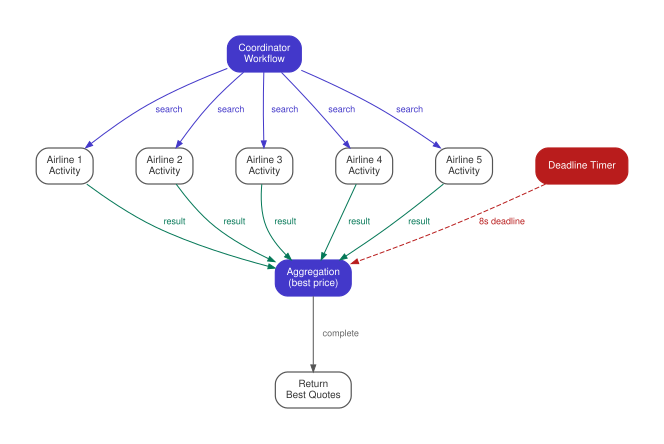

The Scatter-Gather (Parallel Aggregation)
Distribute work across N parallel durable executions, collect results as they complete, and aggregate — handling partial failures durably.
Intent. A task can be decomposed into independent subtasks that execute in parallel. Results must be collected — possibly with a timeout or a quorum threshold — and aggregated into a final result. Partial failures must not lose completed work.
Motivation. A customer searches for flights from San Francisco to London on a travel aggregation site. The system needs to query five airline APIs in parallel: United, Delta, American, Southwest, JetBlue. Each API has different latency characteristics. United responds in 200ms. JetBlue takes 3 seconds. American occasionally times out entirely. The customer expects results within a few seconds, and they expect to see whatever came back, not an all-or-nothing error because one airline was slow.
This fan-out-and-collect pattern appears in any system that queries multiple independent sources: price comparison engines, distributed search, map-reduce jobs, parallel API enrichment, voting or consensus protocols. The defining characteristic is that the subtasks are independent (the United query doesn’t depend on the Delta query), partial results are useful (four out of five prices is still a good comparison), and the aggregation has a deadline (the customer won’t wait forever).
The difficulty isn’t in the parallelism itself — most languages have thread pools and futures. The difficulty is in what happens when things go wrong. If the aggregator process crashes after receiving three out of five results, those three results are lost unless you’ve persisted them somewhere. If you add a database to persist partial results, you need correlation IDs to link each result to the original request, and a background process to detect abandoned aggregations where the coordinator died and the remaining subtasks completed to nobody.
The Pattern

A coordinator workflow spawns N subtasks in parallel — as activities or child workflows — and collects their results as they complete. It applies aggregation logic to decide what to do with them: build a simple list, check for a quorum, or run a ranking function. Each worker task is an independent unit of work that knows nothing about the others. The aggregation logic within the coordinator decides when enough results have arrived: all N, at least K out of N, or however many show up before a deadline.
Traditionally, you’d use a thread pool (or Promise.all, or goroutines)
for parallelism, backed by a database for coordination. A search_requests
table tracks each request; workers write results to a search_results table
keyed by request_id. A stateless aggregator polls for matching rows, checks
whether enough have arrived, and assembles the response. If it crashes after
assembling but before responding, the client retries, the first results sit
orphaned, and you need a deduplication layer on top.
With Durable Execution. The coordinator workflow fans out activities in parallel and collects results with a deadline:
func PriceComparisonWorkflow(ctx workflow.Context, req PriceRequest) ([]PriceResult, error) {
airlines := []string{"united", "delta", "american", "southwest", "jetblue"}
// Scatter: launch all searches in parallel
var futures []workflow.Future
for _, airline := range airlines {
actCtx := workflow.WithActivityOptions(ctx, workflow.ActivityOptions{
StartToCloseTimeout: 10 * time.Second,
})
f := workflow.ExecuteActivity(actCtx, SearchAirline, airline, req) (1)
futures = append(futures, f)
}
// Gather: collect results with a deadline
var results []PriceResult
deadline := workflow.NewTimer(ctx, 8*time.Second) (2)
for _, f := range futures {
selector := workflow.NewSelector(ctx)
var deadlineHit bool
selector.AddFuture(f, func(f workflow.Future) { (3)
var result PriceResult
if err := f.Get(ctx, &result); err != nil {
result = PriceResult{Err: err.Error()}
}
results = append(results, result)
})
selector.AddFuture(deadline, func(f workflow.Future) { (4)
// Deadline hit — return what we have
deadlineHit = true
})
selector.Select(ctx)
if deadlineHit {
break (5)
}
}
if len(results) == 0 {
return nil, fmt.Errorf("no results within deadline for search %s", req.SearchID)
}
return results, nil
}| 1 | Each ExecuteActivity returns a Future immediately — the activity runs
asynchronously while the loop continues launching the next airline query. |
| 2 | A single deadline timer shared across all gather iterations. |
| 3 | If the activity future resolves first, its result is appended. |
| 4 | If the deadline fires first, the loop breaks and returns partial results. |
| 5 | The break is essential — a resolved timer stays resolved, so every
subsequent Select() would pick it immediately. |
The scatter phase launches all five airline queries as concurrent activities.
Each workflow.ExecuteActivity call returns a Future immediately — the
activity runs asynchronously while the workflow continues to the next iteration
of the loop. After all futures are launched, the gather phase collects results
using a race construct (Temporal’s Go SDK calls this a Selector) that races each future against a deadline timer.
The workflow creates an 8-second timer and, for each pending future, adds both
the future and the deadline to a selector. The selector resolves whichever
fires first. If a future resolves first, its result is appended and the loop
continues. If the deadline fires first, the loop breaks and the workflow returns
whatever it has so far. Note that a timer in Temporal’s Go SDK, once resolved, stays
resolved — so if the deadline fires during iteration 3, every subsequent
Select() call would also pick the deadline immediately. The break ensures
this doesn’t matter, but it means the pattern relies on breaking out of the
loop promptly. If you need to continue processing after a deadline (e.g., log
which airlines timed out), collect the remaining futures separately.
This is where durable execution earns its keep. If the worker crashes after collecting three results but before the deadline, the runtime replays the workflow on another worker. During replay, the three completed activities are not re-executed — their results are read from the event history, which effectively makes them free. Only the two pending activities actually run against the airline APIs. Without durable execution, a crash at this point loses all three completed results (they lived in process memory or a volatile cache), and you must re-query all five airlines from scratch — or build a persistence layer to checkpoint partial results yourself.
Consequences. Scatter-Gather eliminates the database table, the correlation IDs, and the polling aggregator. Partial results are durable because they’re recorded as completed activities in the event history. The deadline is a first-class workflow timer, not a background job that checks timestamps.
The main constraint is fan-out degree. Each activity generates events in the workflow’s history: a scheduled event, a started event, and a completed (or failed) event. For five airline queries, that’s 15 events — negligible. For 10,000 parallel tasks (a map-reduce job over many shards), the history grows to 30,000+ events, which approaches or exceeds the default history limit (50,000 events by default in Temporal). At that scale, you need hierarchical decomposition: a coordinator that fans out to 100 child workflows, each of which fans out to 100 activities.
For quorum-based gathering (return as soon as K out of N results arrive,
regardless of the deadline), the gather loop checks len(results) >= K instead
of waiting for the deadline. The deadline still acts as a safety net — if fewer
than K subtasks complete in time, the workflow can return what it has or report
a failure. This is useful for voting protocols, consensus checks, and any
scenario where you need agreement from a majority rather than all participants.
Another consideration is the per-activity timeout. In the example, each
activity has a 10-second execution timeout (StartToCloseTimeout in Temporal), and the workflow has an
8-second deadline timer. If an airline API consistently takes 9 seconds, the
activity will complete before its own timeout but after the workflow’s deadline.
The workflow returns without that airline’s result even though the activity
eventually succeeded. Tuning these two timeouts relative to each other requires
understanding the latency distribution of the downstream services.
Distinction from the Pipeline. Both patterns compose multiple operations, but in opposite directions. The Pipeline (Chapter 7) chains stages sequentially — each stage’s output feeds the next. Scatter- Gather fans work out in parallel — all subtasks receive the same input and their results are aggregated. If your stages have data dependencies (parse first, then validate, then load), use the Pipeline. If your tasks are independent (query five airlines with the same search criteria), use Scatter-Gather. In practice, pipelines often contain scatter-gather stages internally (a pipeline stage that enriches data from multiple sources in parallel).
Known Applications
-
Price comparison — query multiple providers in parallel, return best results within a deadline
-
Distributed search — fan out a query across index shards, merge results
-
Parallel API enrichment — enrich a record from multiple data sources concurrently
-
Batch processing — process N items in parallel, aggregate completion status
-
Voting and consensus — collect votes from N participants, decide on quorum
Related Patterns